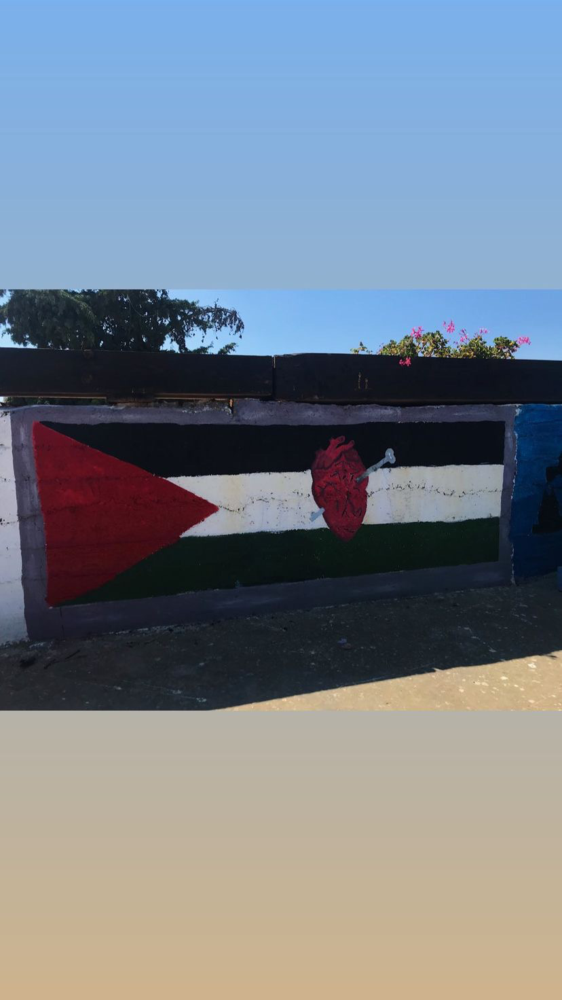

Aida Refugee camp was established in 1950, and is located between Bethlehem and Beit Jala. It spans around 0.71 kilometers squared and has not expanded despite the rising population of the camp.
Aida is partiallly surrounded by the spearation wall built by the Israeli Occupation, and they endure threats on a day-to-day basis because of their proximity to Israeli neighborhoods and settlements. In addition to their lack of security, the refugee camp's infrastructure still suffers from reminants of war, and of massacres and shootings. Refugees in this camp suffer from insecurity, inadequate infrastructure, high amounts of poverty, unemployment and they lack access to resources such as clean water and adequate schooling.
One of the my favorite core memories while visiting this camp in 2019, was the hospitality of the people there. They come from conditions that both you and I will never experience in our lives, but despite that, they are still hopeful. Refugees in Aida are trying to live in spite of the occupation
This photo was taken by me back in 2019, it is a drawing of the Palestinian flag with a wounded heart, and it showcases the broken hearts of all displaced Palestinians within the walls of Palestine who cannot return to their homes.
I remember being told a story about a boy who was 16 in this camp, on his way home from school, getting shot at the entrance of the camp. They still have his picture up everywhere, they still mourn the losses they have, they still weep for the young who have lost their lives, and they still try to cope every day of their lives. People in Aida are fighters, they yearn for their return and live to return one day.
Click here to learn more!